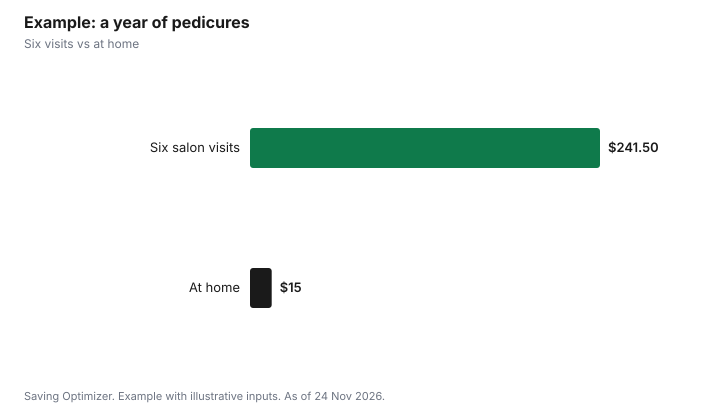

Personal Care · Canada
At-Home Pedicures and Foot Care: Saving on Salon Visits

A salon pedicure in Toronto costs about $30 to $60 before tax and tip. Doing it at home with a file, a pumice stone, clippers and polish costs about $15 a year. You can still book a salon visit for a special occasion. If you have diabetes or poor circulation, see a chiropodist or foot care nurse instead of doing it yourself.
Key takeaways
- Toronto salons list classic pedicures from $30 to $60 before tax and tip (checked 24 Nov 2026).
- Example home kit: about $15 a year.
- Example: six salon pedicures with a 15% tip cost $241.50 a year.
- Trim nails straight across and don't cut cuticles or calluses with blades.
- Diabetes or poor circulation: see a chiropodist or foot care nurse.
Salon prices
| Salon | Service | Price |
|---|---|---|
| AN Nail Spa | Classic pedicure | $30 |
| AN Nail Spa | Deluxe pedicure | $45 |
| Gelly Nails | Classic pedicure | $35 |
| beauty et al. | Pedicure, regular polish | $60 |
Steps at home
- Soak feet in warm water for 10 minutes.
- Gently smooth heels with a pumice stone or foot file.
- Trim nails straight across and file the edges.
- Push cuticles back gently; don't cut them.
- Moisturize, then polish if you like.

A year of pedicures: an example
Example: six classic pedicures at $35 plus a 15% tip cost $241.50 a year. A home kit of a file, pumice, clippers and two bottles of polish at an example $15 lasts the year.
See gel manicures at home vs the salon and tipping nail techs.
Sources
- AN Nail Spa, Toronto price list, checked 24 Nov 2026.
- Gelly Nails, Toronto price list, checked 24 Nov 2026.
- beauty et al., Toronto pedicure menu, checked 24 Nov 2026.
Frequently asked questions
How much is a pedicure in Toronto?
Salon menus listed classic pedicures from $30 to $60 before tax and tip when checked on 24 Nov 2026.
What do I need for an at-home pedicure?
A foot file or pumice stone, clippers, a nail file, moisturizer and polish if you want it.
Should I cut my cuticles?
No. Push them back gently. Cutting them can lead to infection.
Who shouldn't do their own foot care?
People with diabetes, poor circulation or numb feet should see a chiropodist or foot care nurse.
Do I tip for a pedicure?
Tipping is common at Canadian nail salons, so budget for it.
Researched and drafted with AI assistance and fact-checked against official Canadian sources. How we create content.
Note: Not medical advice. Prices change. Tip and kit costs are examples. Education only.